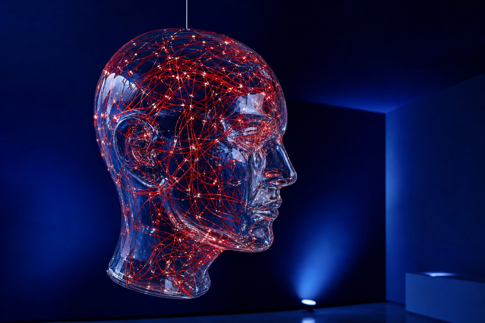

LIVE GENERATIVE MODEL

55.7558° N
37.6173° E
37.6173° E
INDEPENDENT SYNTHETIC STUDIO / 2026
INTELLIGENCE
WITH A PULSE.
Создаём цифровые продукты и идентичности, в которых человеческая интуиция усиливается машинным интеллектом.
↓ISSUE 01
HUMAN × MACHINE
STRATEGY — ARTIFICIAL INTELLIGENCE — DIGITAL EXPERIENCES — BRAND SYSTEMS — STRATEGY — ARTIFICIAL INTELLIGENCE — DIGITAL EXPERIENCES — BRAND SYSTEMS —
01THESIS
WE DON'T AUTOMATE CREATIVITY
Машина умеет считать.
Человек умеет чувствовать.
Мы соединяем их.
02SELECTED SIGNALS
PROJECT
ARCHIVE
2023—2026
Selected experiments
and collaborations
AURA
98.7EMOTIONAL INDEX
03CAPABILITIES
From first signal
to living system.
01
AI Strategy
Продуктовые гипотезы, исследования, AI-трансформация.
02
Brand Systems
Стратегия, айдентика и генеративные дизайн-системы.
03
Digital Products
Интерфейсы и сервисы со встроенным интеллектом.
04
Experiments
Прототипы, инсталляции и новые формы взаимодействия.
0PROJECTS SHIPPED
0GLOBAL AWARDS
0COUNTRIES
∞POSSIBILITIES
● REC
“NEURA не просто поняли технологию. Они нашли для неё человеческий голос.”
МК
МАРИЯ КИМ
CHIEF PRODUCT OFFICER / FORMA
MOSCOW / DUBAI
WORKING WORLDWIDEHELLO@NEURA.STUDIO
+7 495 001 10 01
WORKING WORLDWIDEHELLO@NEURA.STUDIO
+7 495 001 10 01